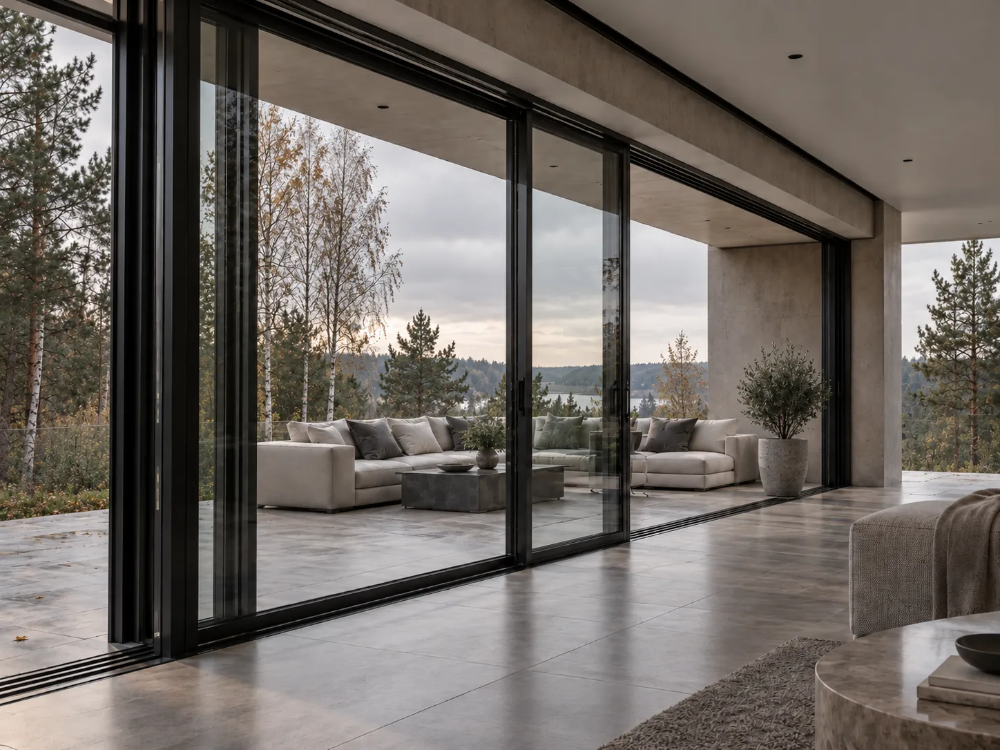

Конструкция
ALUMARK S158, стеклопакет, уплотнения и заводская сборка.
 01 / Закрыто
01 / Закрыто
02 / Открыто 03 / В проекте
03 / В проектеHS3 · ALUMARK S158
01 / Конфигурация
02 / Характеристики
03 / Комплектация
ALUMARK S158, стеклопакет, уплотнения и заводская сборка.
Roto Patio Lift и ручки по карте SKU.
Доставка, монтаж и подготовка проёма.
05 / Похожие